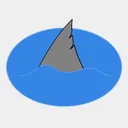
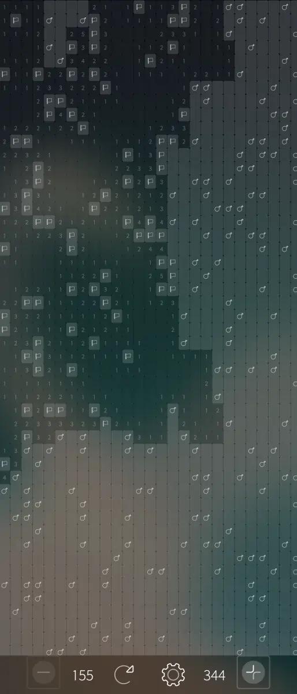
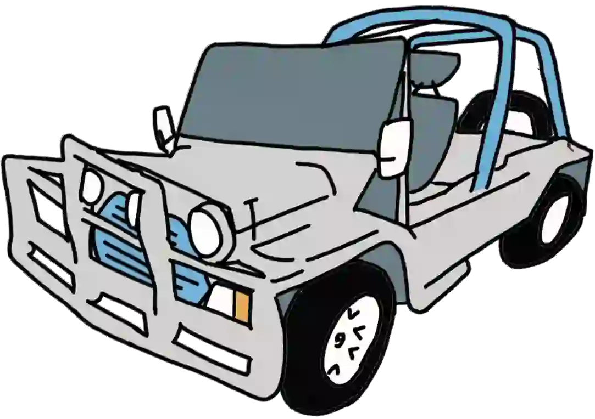

Some useless information, some pictures of my hobbies and some links to other things I've done.
| My name is Ash, I'm a amateur developer turned car-enthusiast turned grease-monkey turned Mechanical Engineer. I'm based in the eastern half of Australia, and that's about as specific as I'd like to be. |  |
I'm not putting my primary email address on the internet for the world to see, but if you send a message to the address below I will see it in due time.
My daily driver is a Lenovo ThinkPad X230T running Coreboot and Debian. Despite being 12 years old now, it is the machine that got me all the way through university, and I'm continuing to use it now. Realistically, while I am impressed with Apple's ARM chipsets of late, I think for the average Joe just about any computer from a decade ago to date should be able to handle most basic tasks. I'm not a gamer or a video-ologist, so this suits my needs just fine.
My phone is a Sony Xperia 10 IV running SailfishOS. For the time being, it appears to work on VoLTE in Australia, though given recent events, it may stop any day now. Sailfish is interesting, but I'd much prefer if it were fully OSS. That said, it's fun to tinker with, I believe it's safer (from a privacy point of view) than the duopoly of alternatives, and it's stable enough for use as a daily driver, so I'm sticking with it for now.
I also run a number of Linux servers - a Lenovo ThinkCentre M90n-1 webserver for Nextcloud and Jellyfin, a Lenovo ThinkCentre M710q mailserver running Postfix and Dovecot (largely as per Sam Hobbs' excellent guide), and a Raspberry Pi 3B pi-hole & unbound server.
Where-ever possible, I try to use privacy focused (to a reasonable extent, I am not a conspiracy
theorist) and OSS/FOSS over commercial,
closed alternatives. This is primarily because I prefer the philosophy of it. If something doesn't
work in OSS, you can usually just check the logs and
fix it yourself. Chances are there are other people with the same issue that will thank you very
much and be on their merry way.
With closed-source, proprietary solutions, you typically get an error message along the lines of
"Something went wrong". The reccomended solution is to
try to re-install the software, operating system, maybe move house, try in a different
country...
Most of my serious development work is either no longer in use, highly specialised for a specific use-case, no longer my intellectual property, or was a website that is not relevant here and has since been handed off to someone else to maintain. These days I just make little utilities for personal use, or games and toys when I get some free time. For example, Sailmines, which is a minesweeper clone for SailfishOS, and was my first foray into QML. Read more.
I am proficient (in alphabetical order) in ASP.NET, C++, C, CSS / HTML / Javascript, PHP, Python, and VB.NET.
The philosophy of this website was for it to be very lightweight and somewhat reminiscent of an
earlier internet, while still looking half-decent.
It uses no javascript, is perfectly readable in text-based browsers and accessible to screen
readers, and avoids images in all page styling (though most pages
do have highly compressed images on them for a bit of eye-candy). Currently the entire website
weighs in at under 470KB.
For now, the site is hosted via Github Pages. I could host it myself over VDSL, but I'd prefer not
to have the hassle. I'm not paying for a hosting provider.
The only thing I'm not a fan of in regards to the Github solution is that I can never sneakily
update something without a record of it!
| Pictured (well, drawn) is my Old Man's Leyland Moke, which is all but my daily drive, and serious fun. I caught the 'car' bug while restoring it during (but not due to the events of) 2020, though that said I was always an admirer of classic vehicles. |  |
My dream garage consists of this Moke, a Mini to go with it for when it's really cold or really wet, and a T-top Subaru Brumby ute (most likely with an EJ donk) for when I need a little more carrying or towing capacity than the Moke can (safely) manage.
What I don't like are ludicrously big cars - especially big "pickup trucks" (why do people call them 'utes'?). One of my favourite statistics is that the Datsun 1000 ute weighed 615kg and had a carrying capacity of 605kg, yet the modern Ford F-150 weighs 2535kg and has a carrying capacity of only 685kg. Remember, that's without including the weight of the driver! It does make you wonder what the point is. A lot of waste for an extra 85kgs...
My favourite cars are from European and Japanese marques from the late 60s through to early 80s. Think the aformentioned Datsun utes, MK1 Golf GTI, the original Mini, etc. These cars are (relatively) easy to work on yourself, and small and light enough that their lack of power (or a fifth gear) doesn't really matter. Besides, what small engines lack in power they make up for in RPM!
I'm very proud of this, though I am by no means an academic.
Thanks in no small part to my lecturer Ali Zare, I am first author on an article in Energies on the topic of emissions reduction (and performance improvement!) of diesel engines with hydrogen and water injection. Read more.
If you're after the cliffnotes version, please have a look at my honours thesis poster, which highlights the key points without going into ridiculous detail: Poster (15.7 KB)
{kind=link}